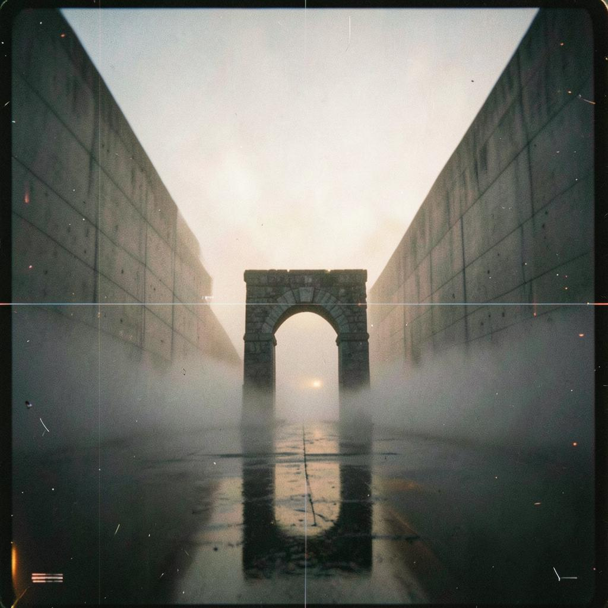
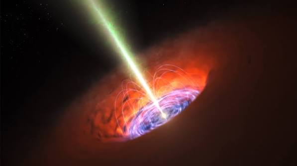
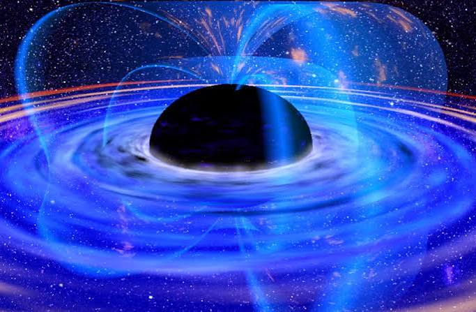
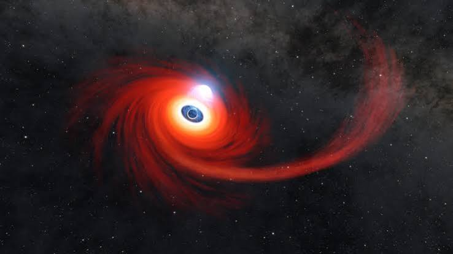
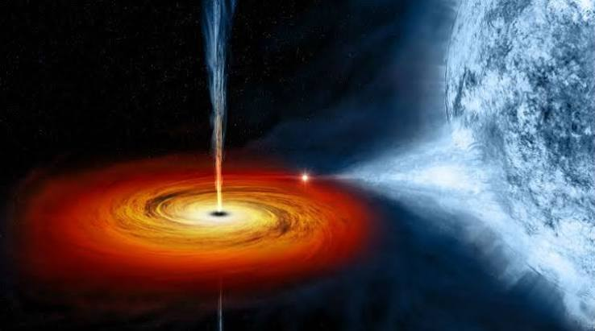
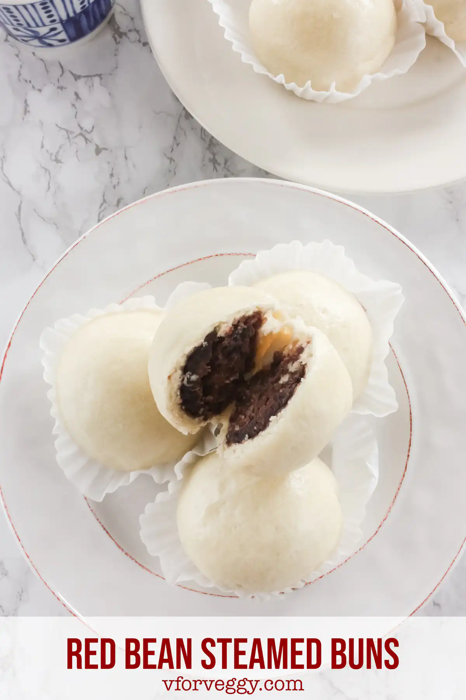

My Media
On this page, you will find the music and video I had generated by AI for class.
Enjoy the mp3 and mp4 media files!
Video
Music
Fuego de Guitarra
A Spanish guitar song based around the idea of a choreographed swordfight
Link to song made in Suno - Gravitational Pulse
A song more fitting for the black hole theme going on with the rest of this website

My Pictures
 |
 |
 |
 |
Dou Sha Bao - Chinese steamed red bean buns

Equipment
- Mixing bowl (stand mixer with dough hook is optional but makes it much easier)
- Table knife (if not using a mixer)
- Parchment paper cut into 4"x4" squares
- Pot with steamer basket, or bamboo/cypress steamer basket
Ingredients
Filling
The lazy way!
- 1 can Red/adzuki beans
- 1 cup Brown sugar
- 2T Agave syrup
- 2T Unsalted butter
- 1.5t Vanilla extract
Dough
- 2 cups All purpose flour
- 1 cup Warm milk
- 1.5T Sugar
- 2T Melted, unsalted butter
- 2t Active dry yeast
- 1t Salt
Directions
Dough
- Mix dry ingredients (flour, sugar, yeast, and salt) until reasonably homogenized.
- Add the milk and either use a mixer with a dough hook or a table knife to begin mixing it into the dry ingredients.
- When partially mixed, add the butter and continue mixing until everything is incorporated.
- If using a mixer, continue running it with the dough for 5 more minutes. If not, knead the dough by hand for 5 minutes until it's elastic and holds together when stretched.
- Cover bowl airtight in plastic wrap and place in a warm (not hot) location to proof for 1 - 1.5 hours.
Filling
- Drain and rinse the red beans (if using dried beans, soak for 12-16 hours in warm water instead).
- Blend beans into a paste in a blender or food processor (you may need to add some water to help).
- Pour into a pan on medium heat.
- While the beans heat up, add all of the other ingredients and mix thoroughly.
- Cook for 1 - 2 hours until the paste begins to darken and thickens enough to stay stuck on a wooden spoon
- Set aside to cool and continue thickening
Steaming
- Once the dough is proofed, punch it down and knead for 10 - 15 seconds to keep it in an intact ball.
- Measure out 3 oz balls of dough until all dough is in separate balls.
- Form the balls into cups and fill with 1.5T of red bean filling.
- Crimp the edges to make a sealed dumpling (you can do this any way you want, including making patterns) and place on a small piece of parchment paper. You can coninue this as the previous buns steam.
- Place the buns in batches of 2 - 3 (or however many will fit in your steamer with room to expand). Steam for 15 minutes on medium heat. Make sure you maintain enough water to keep the pot from burning!
- Remove and set aside on a rack (keep the parchment paper attached to avoid sticking) to dry and cool a bit. Wrap as you want to keep them airtight so they don't completely dry out.
- Remove the paper and enjoy! Better when warm (they microwave well), and they freeze great! If unfrozen, consume within a week of steaming.